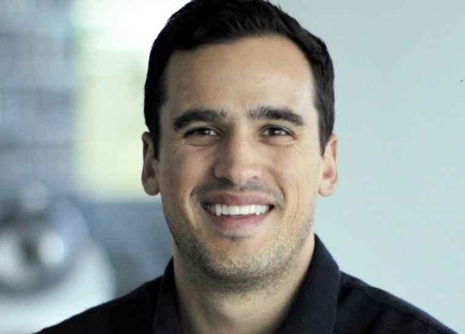

The Fund / 01
Backing the important thing everyone else is ignoring.
We find uncommon ground, backing exceptional founders building breakthrough companies — in artificial intelligence, space infrastructure, defence, and cryptographic proof — before the rest of the market looks their way.
Fund I held its first close in April 2026: a ~€25M-target early-stage vehicle, run by a solo GP, writing ~$2M checks and leading rounds from pre-seed through Series A.
- Vehicle
- Off Piste Fund I
- First close
- April 2026
- Target
- ~€25M ($30M)
- Structure
- Solo GP
- Stage
- Pre-seed → Series A
- Typical check
- ~$2M · Leads
- Base
- Norway
The General Partner / 02
Max Samuel.
Max Samuel spent seven years inside Peter Thiel’s world — Associate General Counsel & Chief Compliance Officer at Thiel Capital in Los Angeles, from 2014 to 2021 — after investment banking at Credit Suisse in New York and a turn as a technology attorney at Wilson Sonsini in the Bay Area.
In 2021 he became a General Partner at SNÖ Ventures in Norway, where through 2025 he led investments in Nordic Air Defence, Cursive, Aris Machina, IntuiCell, SINDRi, Ailit, MusicInfra, Churney and Spring, among others — all while keeping the US relationships that define his edge. Alongside the fund he began backing the frontier himself: an early investor in Starcloud (data centres in space) and Enhanced (NYSE: ENHA).
In January 2026 he struck out on his own, founding Off Piste to bridge the two worlds — elite US networks carried to founders the Bay Area hasn’t met yet — with the fund’s first close that April.
Thiel Capital / Founders Fund ecosystem / US frontier networks → Nordic & European founders

The Route / 2008 → Present
Credit Suisse
Investment Banking Associate
New York
Wilson Sonsini
Attorney
SF Bay Area
Thiel Capital
Associate General Counsel & Chief Compliance Officer
Los Angeles
SNÖ Ventures
General Partner
Led Nordic Air Defence, Cursive, IntuiCell, SINDRi & others
Norway
Off Piste Capital
Founder & General Partner
Fund I first close · April 2026
Starcloud
Pre-seed investor — data centers in space
Personal · during SNÖ
Enhanced
Early investor
NYSE: ENHA
The Thesis / 03
The name is the thesis. Off piste is where the trail ends.
Contrarian by design
“Off Piste” and “Find Uncommon Ground” aren’t decoration. Seven years at Thiel Capital is seven years in the definite-optimism school — backing the important thing everyone else is looking away from.
Network as the moat
The edge is access: connecting skilled founders outside the Bay Area to Silicon Valley’s networks — deal flow drawn from a decade in the Thiel and Founders Fund ecosystem and the US frontier-tech relationships built along the way.
Frontier, not fluff
The announced deals are AI truth-adjudication, space infrastructure, cryptographic proof and defence hardware — not SaaS. Off Piste backs the systems and infrastructure of the future.
Geographic arbitrage
US networks × Nordic and European founders. Norway-based, globally sourced — carrying elite American capital and relationships to talent the Valley hasn’t reached yet.
Find Uncommon Ground
Off the
groomed trail.
Building something important where nobody else is looking? We’d like to hear from you.